Contents
- Introduction
- User Guide
- FAQ
Processing pipeline
To call the FDT GUI, either run Fdt (Fdt_gui on a Mac), or run fsl and press the FDT button.
A typical processing pipeline (and approximate time required for each stage, based on an Intel 2.66GHz processor, and a 60-direction whole brain dataset of dimensions 128x128x70, at 2 mm isotropic resolution) would consist of:
- Any study or scanner-specific pre-processing (e.g., conversion from DICOM to NIFTI, removal of images affected by large artifacts). This would be done manually by the user.
- Eddy current correction using FDT (around half a minute per volume).
Brain extraction using BET.
- dtifit - Fitting of diffusion tensors on corrected data using dtifit within FDT to check data quality (~1 minute)
- bedpostx - Fitting of the probabilistic diffusion model on corrected data (~15 hours, or less if parallelised)
- registration - (3-6 minutes)
- probtrackx - Probabilistic tractography run on the output of bedpostx (execution time depends very much on what the user wishes to do. Generating a connectivity distribution from a single voxel of interest takes about 1 second)
Further post-processing of probtrackx outputs can be carried out if required using the command-line utilities
Eddy Current Correction
Eddy currents in the gradient coils induce (approximate) stretches and shears in the diffusion weighted images. These distortions are different for different gradient directions. Eddy Current Correction corrects for these distortions, and for simple head motion, using affine registration to a reference volume.
In the FDT GUI, use the top left drop down menu to select Eddy current correction.
Diffusion weighted data: Use the browse button to select your diffusion weighted dataset (a 4D image).
Corrected output data : Use the browse button to specify a filename for the corrected 4D dataset.
Reference volume : Set the volume number for the reference volume that will be used as a target to register all other volumes to. (default=0, i.e. the first volume)
Command line utility
eddy_correct <4dinput> <4doutput> <reference_no>
Registration within FDT
If tractography results are to be stored in any space other than diffusion space then registration must be run.
Registration within FDT uses FLIRT, but there is also an option for using FNIRT nonlinear registration to standard space. When using the GUI, registration can only be applied after bedpostx has been run. Typically, registration will be run between three spaces:
Diffusion space (using the nodif_brain image in the bedpostX directory.)
- Structural space (using a structural image, e.g., the space of a high resolution T1-weighted image of the same subject)
Standard space (by default, the MNI152 brain stored within $FSLDIR/data/standard)
Note that the structural (T1-weighted) image must have had BET applied. The nodif_brain image should be the brain extracted version of the nodif image that is stored in the bedpostX directory. Create this image using fslroi then bet on the data if it does not already exist. (it is important that the user checks the quality of bet results on these images and adjust the settings in bet where appropriate).
Transformation matrices, and their inverses, will be derived from diffusion to structural space and from structural to standard space. Relevant matrices will be concatenated to produce transformation matrices between diffusion and standard space. The resulting matrices are stored within the xfms subdirectory of the bedpostX directory and named as follows:
- diff2str.mat - from diffusion to structural space
- str2diff.mat - from structural to diffusion space
- diff2standard.mat - from diffusion to standard space
- standard2diff.mat - from standard to diffusion space
- str2standard.mat - from structural to standard space
- standard2str.mat - from standard to structural space
By default, transformation matrices between diffusion and structural space are derived using 6 degrees of freedom, the correlation ratio cost function and normal search; transformation matrices between structural and standard space are derived using 12 degrees of freedom, the correlation ratio cost function and normal search. These parameters may be adjusted if required using the drop down menus in the registration panel.
In the GUI, it is possible to use nonlinear FNIRT registration between structural and standard space. In this case, the user needs to provide a non-brain-extracted structural image, as this will make FNIRT more accurate.
Note that diffusion images will typically have geometric distortions due to the effect of field inhomogeneities that are not affecting the structural image. Therefore, an affine FLIRT registration to structural space may not be accurate enough. We recommend that the user corrects for these distortions either using fieldmap acquisitions or using the TOPUP tool. This must be done in the pre-processing and prior to registration.
DTIFIT
DTIFIT fits a diffusion tensor model at each voxel. You would typically run dtifit on data that has been pre-processed and eddy current corrected. Note that dtifit is not necessary in order to use the probabilistic tractography (which depends on the output of BEDPOSTX, not DTIFIT).
In the FDT GUI, use the top left drop down menu to select DTIFIT.
Input: You can specify an input directory containing all the required files with standardized filenames, or alternatively you can specify input files manually by turning on the specify input files manually switch. If an input directory is specified then all files must be named as shown in parentheses below. If input files are specified manually they can have any filename. Required files are:
- Diffusion weighted data (data): A 4D series of data volumes. This will include diffusion-weighted volumes and volume(s) with no diffusion weighting.
BET binary brain mask (nodif_brain_mask): A single binarised volume in diffusion space containing ones inside the brain and zeroes outside the brain.
Output basename: User specifies a basename that will be used to name the outputs of dtifit. If the directory input option is used then the basename will be dti.
- Gradient directions (bvecs): An ASCII text file containing a list of gradient directions applied during diffusion weighted volumes. The order of entries in this file must match the order of volumes in the input data series.
The format is
x_1 x_2 x_3 ... x_n
y_1 y_2 y_3 ... y_n
z_1 z_2 z_3 ... z_n
Vectors are normalised to unit length within the dtifit code. For volumes in which there was no diffusion weighting, the entry should still be present, although the direction of the vector does not matter!
- b values (bvals): An ASCII text file containing a list of b values applied during each volume acquisition. The b values are assumed to be in s/mm^2 units. The order of entries in this file must match the order of volumes in the input data and entries in the gradient directions text file.
The format is
b_1 b_2 b_3 ... b_n
Advanced options In addition to the required input above, the user can choose to apply a weighted least-squares regression instead of the default standard linear regression. The user can also choose to save the tensor elements and/or the sum of squared error. This last output can be useful for detecting artefacts.
Outputs of dtifit
<basename>_V1 - 1st eigenvector
<basename>_V2 - 2nd eigenvector
<basename>_V3 - 3rd eigenvector
<basename>_L1 - 1st eigenvalue
<basename>_L2 - 2nd eigenvalue
<basename>_L3 - 3rd eigenvalue
<basename>_MD - mean diffusivity
<basename>_FA - fractional anisotropy
<basename>_MO - mode of the anisotropy (oblate ~ -1; isotropic ~ 0; prolate ~ 1)
<basename>_S0 - raw T2 signal with no diffusion weighting
optional output
<basename>_sse - Sum of squared error
<basename>_tensor - tensor as a 4D file in this order: Dxx,Dxy,Dxz,Dyy,Dyz,Dzz
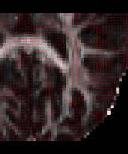 |
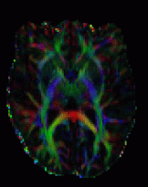 |
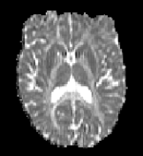 |
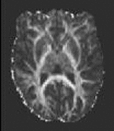 |
V1 Lines |
V1 RGB |
L1 |
FA |
command line utility
dtifit
Compulsory arguments (You MUST set one or more of):
-k,--data dti data file
-o,--out Output basename
-m,--mask Bet binary mask file
-r,--bvecs b vectors file
-b,--bvals b values file
Optional arguments (You may optionally specify one or more of):
-V,--verbose switch on diagnostic messages
-h,--help display this message
--cni Input confound regressors
--sse Output sum of squared errors
-w,--wls Fit the tensor with weighted least squares
--littlebit Only process small area of brain
--save_tensor Save the elements of the tensor
-z,--zmin min z
-Z,--zmax max z
-y,--ymin min y
-Y,--ymax max y
-x,--xmin min x
-X,--xmax max x
BEDPOSTX
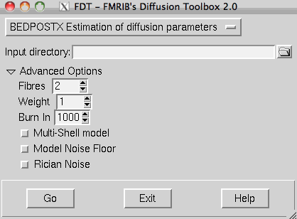 BEDPOSTX stands for Bayesian Estimation of Diffusion Parameters Obtained using Sampling Techniques. The X stands for modelling Crossing Fibres. bedpostx runs Markov Chain Monte Carlo sampling to build up distributions on diffusion parameters at each voxel. It creates all the files necessary for running probabilistic tractography. For an overview of the modelling carried out within bedpostx see this technical report.
bedpostx allows to model crossing fibres within each voxel of the brain. Crucially, bedpostx allows to automatically determine the number of crossing fibres per voxel. For details on the model used in this case, see Behrens et al, NeuroImage 2007.
bedpostx takes about 15 hours to run but will automatically batch if run on an SGE-capable system.
Note that bedpostx is a wrapper script for a command-line tool called xfibres.
In the FDT GUI, use the top left drop down menu to select BEDPOSTX.
Input directory: Use the browse button to select an input directory. That directory must contain the following files:
data: A 4D series of data volumes. This will include diffusion-weighted volumes and volume(s) with no diffusion weighting.
nodif_brain_mask: 3D binary brain mask volume derived from running bet on nodif (i.e. on a volume with no diffusion weighting).
bvecs (with no file extension): An ASCII text file containing a list of gradient directions applied during diffusion weighted volumes. The order of entries in this file must match the order of volumes in data.
The format is
x_1 x_2 x_3 ... x_n
y_1 y_2 y_3 ... y_n
z_1 z_2 z_3 ... z_n
Vectors are normalised to unit length within the bedpostx code. For volumes in which there was no diffusion weighting, the entry should still be present, although the direction of the vector does not matter!
bvals (with no file extension): An ASCII text file containing a list of bvalues applied during each volume acquisition. The order of entries in this file must match the order of volumes in the input data and entries in the gradient directions text file.
The format is
b_1 b_2 b_3 ... b_n
The order of bvals must match the order of data.
Tip: Run bedpostx_datacheck in command line to check if your input directory contains the correct files required for bedpostx.
Outputs of BEDPOSTX
bedpostx creates a new directory at the same level as the input directory called <indir>.bedpostX which contains all the files you need for probabilistic tractography. Highlights are (<i> indicates the i-th fibre. It ranges from 1 to the maximum number of fibres set in the advanced options.):
merged_th<i>samples - 4D volume - Samples from the distribution on theta
merged_ph<i>samples - 4D volume - Samples from the distribution on phi
theta and phi together represent the principal diffusion direction in spherical polar co-ordinates
merged_f<i>samples - 4D volume - Samples from the distribution on anisotropic volume fraction (see technical report).
mean_th<i>samples - 3D Volume - Mean of distribution on theta
mean_ph<i>samples - 3D Volume - Mean of distribution on phi
mean_f<i>samples - 3D Volume - Mean of distribution on f anisotropy
- Note that in each voxel, fibres are ordered according to a decreasing mean f-value
mean_dsamples - 3D Volume - Mean of distribution on diffusivity d
mean_S0samples - 3D Volume - Mean of distribution on T2w baseline signal intensity S0
dyads<i> - Mean of PDD distribution in vector form. Note that this file can be loaded into fslview for easy viewing of diffusion directions
dyads<i>_dispersion - 3D Volume - Uncertainty on the estimated fibre orientation. Characterizes how wide the orientation distribution is around the respective PDD.(how is this calculated?)
nodif_brain_mask - binary mask created from nodif_brain - copied from input directory
UserGuide/fdt_spherical_polars.gif){kind=link}
UserGuide/dyads.jpg){kind=link}
Advanced Options
You may change some options before running bedpostx, depending on the questions you want to ask or the quality of your diffusion data. The default values of these parameters are the ones used in the corresponding paper (Behrens et al, NeuroImage 2007).
- Fibres: Number of fibres modelled per voxel.
- Weight: Multiplicative factor for the prior on the additional modelled fibres. A smaller factor means more weighting for the additional fibres.
- Burnin: Number of iterations before starting the sampling. These might be increased if the data are noisy, and the MCMC needs more iterations to converge.
Additionally, the following alternative models are available in the advanced options:
Multi-Shell Model : Use this option if the data contain more than one non-zero bvalue. This will use the model described in Jbabdi et al. MRM 2012, where the diffusion coefficient is modelled using a Gamma distribution. This option will output the posterior mean of a diffusivity variance parameter mean_d_stdsamples. Command line argument: --model=2.
Noise Floor Model : Use this option if (part of) the data is operating close to the noise floor. This will fit one extra parameter f0 that captures the noise floor. This is also described in Jbabdi et al. MRM 2012. This option will output the posterior mean of the noise floor parameter mean_f0samples. Command line argument: --f0 --ardf0.
Rician Noise : Use this option to replace the default Gaussian noise assumption with Rician noise. This will output the posterior mean of a noise precision (i.e. inverse of variance) parameter mean_tausamples. Command line argument: --rician.
Command line utility
Usage: bedpostx <subject directory> [options] expects to find bvals and bvecs in subject directory expects to find data and nodif_brain_mask in subject directory options (old syntax) -n (number of fibres per voxel, default 2) -w (ARD weight, more weight means less secondary fibres per voxel, default 1) -b (burnin period, default 1000) -j (number of jumps, default 1250) -s (sample every, default 25) -model (1 for monoexponential, 2 for multiexponential, default 1) ALTERNATIVELY: you can pass on xfibres options directly to bedpostx For example: bedpostx <subject directory> --noard --cnonlinear Type 'xfibres --help' for a list of available options Default options will be bedpostx default (see above), and not xfibres default. Note: Use EITHER old OR new syntax.
PROBTRACKX - probabilistic tracking with crossing fibres
For details about probabilistic tractography as implemented in FDT, see this technical report, and for details about crossing fibre modelling in FDT, see Behrens et al, NeuroImage 2007.
After bedpostx has been applied it is possible to run tractography analyses using probtrackx. Briefly, probtrackx repetitively samples from the distributions of voxel-wise principal diffusion directions, each time computing a streamline through these local samples to generate a probabilistic streamline or a sample from the distribution on the location of the true streamline. By taking many such samples FDT is able to build up the histogram of the posterior distribution on the streamline location or the connectivity distribution.
The following explains how to run probtrackx using the GUI. The command-line options (which are slightly more flexible than the GUI) can be obtained from a terminal window by running:
probtrackx2 --help
Note that the GUI only runs the new version (probtrackx2). Users of the old version (probtrackx) can only run it from the command line.
PROBTRACKX GUI has two main sections:
PROBTRACKX requires the specification of a bedpostX directory. This directory must contain all the following images:
merged_th<i>samples
merged_ph<i>samples
merged_f<i>samples
nodif_brain_mask
As explained below, results from probtrackx can be binned in any available space -e.g., diffusion space, structural space or standard space. Note, however, that tractography itself ALWAYS takes place in diffusion space - it is simply the results of probtrackx that are stored in the required space. If probtrackx results are to be stored in a space other than diffusion space then you will need transformations from this space back into the space of the diffusion data.
You can use the FDT registration tab to create the required transformations, which will all be stored in the xfms subdirectory of the bedpostX directory. Probtrackx can take either linear (FLIRT) or nonlinear (FNIRT) transformations. In the latter case, both forward (diffusion to seed space) and backward (seed space to diffusion) transformations are needed.
For example, for analyses in structural space:
Linear: xfms/str2diff.mat
Nonlinear: xfms/str2diff_warp and xfms/diff2str_warp
Overview
PROBTRACKX involves generating connectivity distributions from user-specified seed voxels or surface vertices (or both). The output will be a single image in the space of the specified seed like this. All brain voxels will have a value (though many of these will be zero) representing the connectivity value between that voxel and the seed voxel (i.e., the number of samples that pass through that voxel). Note that when connectivity distributions are generated from multiple seed points within a region of interest then the time required for the analysis to run will be approximately the number of seed points multiplied by the time taken to generate a distribution from a single point. probtrackx also allows to specify targets for the tractography. These can either be inclusion/exclusion masks, or targets for seed classification based on connectivity.
UserGuide/fdt_simple_tract3.gif){kind=link}
Seed specification
A common feature for all seed specification modes is the ability to provide the seed in another space than the diffusion space. If seed space is not diffusion, then check the corresponding button. Set the transformation matrix from seed space to diffusion space (or both forward and backward warpfields if using nonlinear registration). Note that, in all cases, the smaller the voxel size in your seed space image, the lower the resulting connectivity values will be to these voxels (This is intuitive - the smaller a voxel is, the less chance that the true streamline will pass through it). This highlights the problem with binning a continuous distribution into meaningless discrete bins. In order for the probability values to be truly meaningful, the discrete bins chosen should be anatomically meaningful, as is the case when using classification targets.
Seed can be specified either as a Single Voxel, a Single mask, or Multiple masks (see below for more details). When using masks, these can either be volume files or surface files (see below for supported surface formats). Check the surface button if one or all of the masks are surfaces. When using surfaces, the user must set the surface coordinate convention and provide a surface reference volume.
Streamlines are seeded from all non-zero voxels of the seed files, or all vertices of the surface files. In the case where the surface files contain numerical values associated with vertices, tractography is seeded from all non-zero vertices, unless all the numerical values are zero, in which case the whole surface is considered as an ROI.
Single voxel
Generates a connectivity distribution from a single, user-specified voxel.
GUI Options:
Seed reference image Use the browse button to locate a reference image (e.g., subject1.bedpostX/struct.nii.gz if seed space is structral space).
Seeds: Enter the x,y,z co-ordinates of a single seed voxel. Use the buttons to the right to specify whether the coordinates are given in voxels or millimetres.
Single mask
Generates a connectivity distribution from a user-specified region of interest.
GUI Options: Seed image/surface: Use the browse button to locate the seed image/surface. Probabilistic tractography will be run from every point (voxel or vertex) with a value different than 0 in this mask. If a surface is used as an input, and if all vertices have zero scalar value, then all vertices of the surface will be seeded.
The output directory will contain:
probtrackx.log - a text record of the command that was run.
fdt.log - a log of the setup of the FDT GUI when the analysis was run. To recover this GUI setup, type Fdt fdt.log
fdt_paths - a 3D image file containing the output connectivity distribution to the seed mask.
waytotal - a text file containing a single number corresponding to the total number of generated tracts that have not been rejected by inclusion/exclusion mask criteria.
Multiple masks
Generates a connectivity distribution between a group of seed masks. This option repeatedly samples tracts from every seed mask in a list, and retains only those tracts that pass through at least one of the other seed masks. The output is the sum of the connectivity distributions from each of the seed masks.
GUI Options:
Masks list: Use the add button to locate each seed mask. Seed masks should all be in the same space (e.g., diffusion, structural or standard space). Seed masks can be either image volumes or surfaces or both. When all masks are loaded you can press the save list button to save the list of masks as a text file. If you already have a text file list of required seed masks (including their path) then you can load it with the load list button.
The output directory will contain:
probtrackx.log - a text record of the command that was run.
fdt.log - a log of the setup of the FDT GUI when the analysis was run. To recover this GUI setup, type Fdt fdt.log
fdt_paths - a 3D image file containing the output connectivity distribution.
waytotal - a text file containing one number per seed mask (in the order that has been specified when listing them). These numbers correspond to the total number of generated tracts from each seed mask that have reached at least one of the other masks and have not been rejected by inclusion/exclusion mask criteria.
Including targets for tractography - rationale
probtrackx allows you to include target masks for any tractography experiment. These masks can be image volumes and/or surfaces. When using surfaces, these should all be using the same convention (i.e. FreeSurfer/Caret/FIRST/voxel - see below).
Very Important: Every target mask must be in the same space as the seed masks (or the reference image in the case of a single voxel mode).
Targets can be waypoint masks (a.k.a. inclusion masks), for selecting only tracts passing through particular points in the brain; exclusion masks, for excluding tracts passing through parts of the brain; termination masks, for forcing tracts to stop whenever they reach a certain area; or classification target masks for connectivity-based seed classification. All these targets are optional.
Waypoint masks
Use inclusion masks in the tractography. If more than one mask is set, then by default probtrackx will perform an AND operation. I.e. tracts that do not pass through ALL these masks will be discarded from the calculation of the connectivity distribution. You can set this to an OR using the Waypoint option drop down menu under the Options tab. In this case, streamlines are only retained if they intersect at least one of the waypoint masks.
Use the add and remove buttons to make a list of waypoint masks.
Exclusion mask
If an exclusion mask is to be used then check the box and use the browse button to locate the mask file. Pathways will be discarded if they enter the exclusion mask. For example, an exclusion mask of the midline will remove pathways that cross into the other hemisphere.
Termination mask
If a termination mask is to be used then check the box and use the browse button to locate the mask file. Pathways will be terminated as soon as they enter the termination mask. The difference between an exclusion and a termination mask is that in the latter case, the tract is stopped at the target mask, but included in the calculation of the connectivity distribution, while in the former case, the tract is completely discarded. (Note that paths are always terminated when they reach the brain surface as defined by nodif_brain_mask)
Classification targets
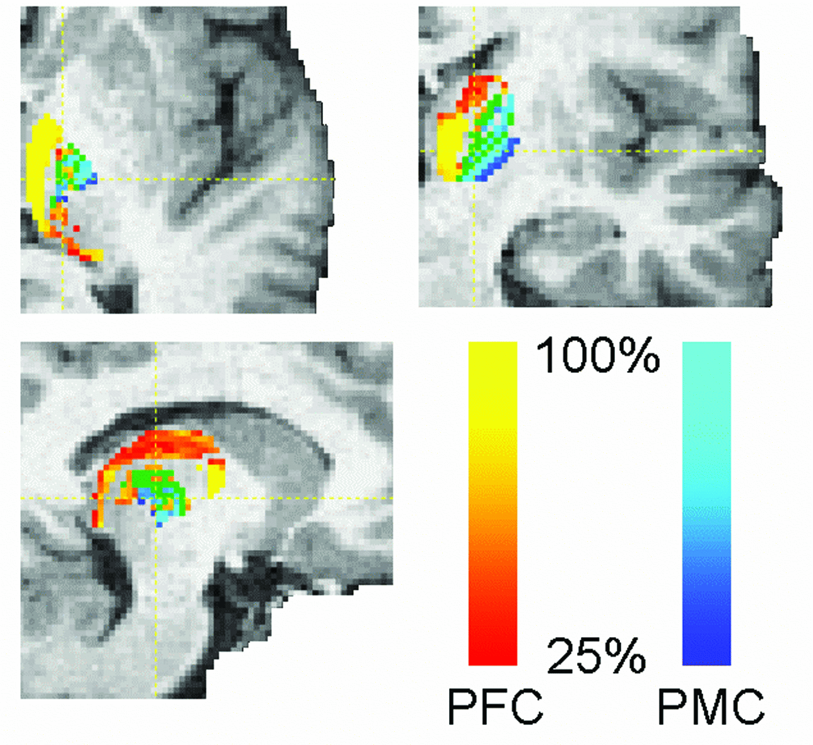 When using classification targets, probtrackx will quantify connectivity values between a seed mask and any number of user-specified target masks. This option is only active when the seed mask is a single mask. In the example on the right, seed voxels in the thalamus are classified according to the probability of connection to different cortical target masks.
Use the add button to locate each target mask. Targets must be in the same space as the seed mask. When all targets are loaded you can press the save list button to save the list of targets as a text file. If you already have a text file list of required targets (including their path) then you can load it with the load list button. The output directory will contain a single volume for each target mask, named seeds_to_{target} where {target} is replaced by the file name of the relevant target mask. In these output images, the value of each voxel within the seed mask is the number of samples seeded from that voxel reaching the relevant target mask. The value of all voxels outside the seed mask will be zero. Note that the files seeds_to_{target} will have the same format (either volumes or surfaces) as the seed mask.
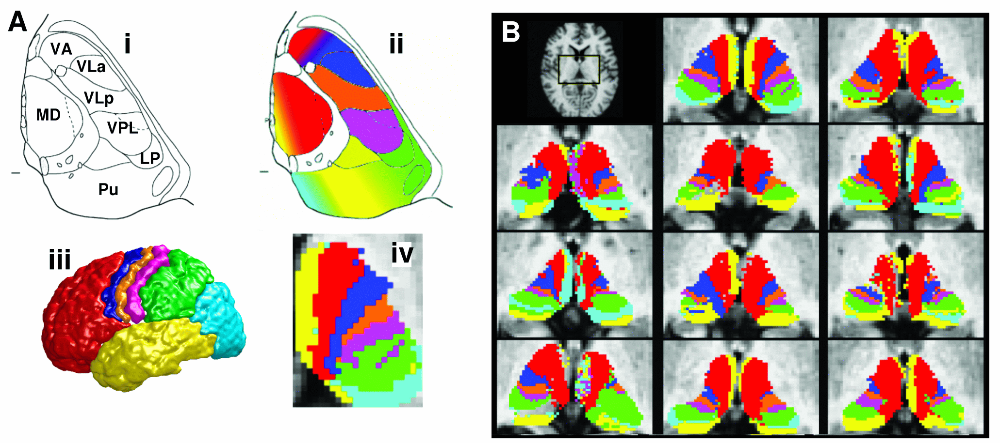
There are command line utilities that can be run on these outputs:
- proj_thresh - for thresholding some outputs of probtrackx
- find_the_bigggest - for performing hard segmentation on the outputs of probtrackx, see example on the right
Options Tab
Before running probtrackx, the user is able to change the setting of certain parameters by clicking the options tab.
Basic Options:
Number of samples (default 5000): This determines the number of individual pathways (or samples) that are drawn through the probability distributions on principle fibre direction (see appendix for more details on the modelling and tractography methods). By default this is set to 5000 as we are confident that convergence is reached with this number of samples. However, reducing this number will speed up processing and can be useful for preliminary or exploratory analyses.
Curvature Threshold (default 0.2): We limit how sharply pathways can turn in order to exclude implausible pathways. This number is the cosine of the minimum allowable angle between two steps. By default this is set to 0.2 (corresponding to a minimum angle of approximately ±80 degrees). Adjusting this number can enable pathways with sharper angles to be detected.
Verbose: If this option is selected then FDT prints additional logging information to screen while it is running.
Loopcheck: By default, we terminate pathways that loop back on themselves -i.e paths that travel to a point where they have already been.
Advanced options:
Use modified Euler streamlining: Use modified Euler integration as opposed to simple Euler for computing probabilistic streamlines. More accurate but slower.
Maximum number of steps (default 2000): By default, samples are terminated when they have travelled 2000 steps. Using a step length of 0.5mm this corresponds to a distance of 1m. These values can be adjusted if required.
Step length (default 0.5mm): This determines the length of each step. This setting may be adjusted from default e.g., depending on the voxel size being used, or if tracking is being performed on different sized brains (e.g., infants or animals).
Use anisotropy to constrain tracking: Use this option if you want the fractional anisotropic volumes (stored in merged_f<i>samples) to influence the tractography. The tracts stop if the anisotropy is lower than a random variable between 0 (low anisotropy) and 1 (high anisotropy).
Use distance correction: This option corrects for the fact that connectivity distribution drops with distance from the seed mask. If this option is checked, the connectivity distribution is the expected length of the pathways that cross each voxel times the number of samples that cross it.
Subsidiary fibre volume threshold (default=0.01): Threshold on the volume fraction of subsidiary fibres. Fibres with a lower volume fraction than this threshold (as given in the mean_f<i>samples file in the bedpostx directory) are discarded during tractography.
Minimum length threshold (default=0): Discard streamlines that stop before reaching a length (in mm) bigger than this threshold. The default is to accept all lengths.
Seed sphere sampling (default=0): When tracking from a volume-type seed, tracking is by default run from the centre of the voxels. Use this option to jitter the starting point in a sphere of given radius (in mm).
Waypoint options (only used if waypoint masks are set in the main tab):
Apply waypoint independently in both directions: Streamlines are run in both directions from the starting point. By default, the two halves are considered independently for the waypoint inclusion criterion. Untick this box if you want them to be considered together as one streamline.
Force waypoint crossing in the listed order: Only accept streamlines that cross the waypoint mask in the order provided in the GUI. This is only used when the waypoint condition (below) is set to AND.
Waypoint condition (default=AND): By default, streamlines are only accepted if they intersect ALL waypoint masks. Change this to OR and they will be accepted if they intersect at least one of the masks.
Matrix Options The following set of options can be used to store a connectivity matrix between (1) all seed points and all other seed points, or (2) all seed points and all points in a target mask, or (3) all pairs of points in a target mask (or a pair of target masks). All masks used here MUST BE IN SEED SPACE. These options can be used separately or in conjunction.
Matrix1 and Matrix2 store the number of samples (potentially modulated by distance when distance correction is used) between the rows (seed points) and the columns of the matrix.
Matrix3 stores the number of sample streamlines (potentially modulated by distance when distance correction is used) between each pair of points in a pair of target masks. In this case, when a streamline is sent from each seed point in both directions, if the streamline hits the two target masks at two locations along either sides of the streamline, the corresponding row and column of matrix3 is filled.
Note on the ouput format: matrix1,2,3 are stored as 3 column ASCII coding of sparse matrices. These files can be loaded into matlab using e.g.:
x=load('fdt_matrix1.dot');
M=spconvert(x);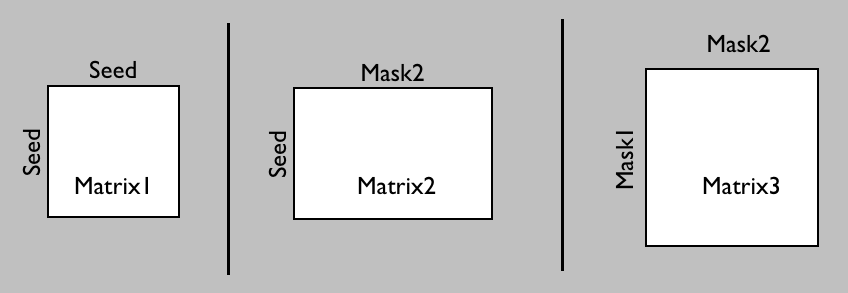 |
Summary of Matrix Options output |
Typical uses of Matrix options:
- Matrix1: The seed mask(s) can represent grey matter, so this would be all GM to GM connectivity.
- Matrix2: The seed can be a grey matter region, and mask2 the rest of the brain (can be low res). The results can then be used for blind classification of the seed mask.
- Matrix3: The 'target' masks can be the whole of grey matter, and the seed mask white matter. This option allows more sensitive reconstruction of grey-to-grey connectivity as pathways are seeded from all their constituting locations, rather than just their end-points as in Matrix1.
Example use of Matrix2 for clustering:
A typical use of Matrix2 is blind (i.e. hypothesis-free) classification. Say you have run probtrackx with a seed roi (e.g. thalamus) and the --omatrix2 option by setting the Matrix2 target mask to a whole brain mask (typically this mask would be lower resolution than the seed mask). The resulting Matrix2 can be used in Matlab to perform 'kmeans' classification. Below is an example Matlab code to do this (this example is only valid if the seed mask is a NIFTI volume, not a surface):
% Load Matrix2
x=load('fdt_matrix2.dot');
M=full(spconvert(x));
% Calculate cross-correlation
CC = 1+corrcoef(M');
% Do kmeans with k clusters
idx = kmeans(CC,k); % k is the number of clusters
% Load coordinate information to save results
addpath([getenv('FSLDIR') '/etc/matlab']);
[mask,~,scales] = read_avw('fdt_paths');
mask = 0*mask;
coord = load('coords_for_fdt_matrix2')+1;
ind = sub2ind(size(mask),coord(:,1),coord(:,2),coord(:,3));
[~,~,j] = unique(idx);
mask(ind) = j;
save_avw(mask,'clusters','i',scales);
!fslcpgeom fdt_paths clusters
Using surfaces
It is possible to use surface files in probtrackx. The preferred format is GIFTI.
Surface files typically describe vertex coordinates in mm. Annoyingly, different softwares use different conventions to transform mm to voxel coordinates. Probtrackx can deal with the following conventions: FreeSurfer, Caret, FIRST and voxel. The latter convention simply means that mm and voxel coordinates are the same.
Switching conventions
When using surfaces in probtrackx, all surfaces MUST use the same convention. However, we provide a command-line tool (surf2surf) to transform between different conventions. This tool can also be used to convert between different surface file formats.
surf2surf - conversions between surface formats and/or conventions
Usage:
Usage: surf2surf -i <inputSurface> -o <outputSurface> [options]
Compulsory arguments (You MUST set one or more of):
-i,--surfin input surface
-o,--surfout output surface
Optional arguments (You may optionally specify one or more of):
--convin input convention [default=caret] - only used if output convention is different
--convout output convention [default=same as input]
--volin input ref volume - Must set this if changing conventions
--volout output ref volume [default=same as input]
--xfm in-to-out ascii matrix or out-to-in warpfield [default=identity]
--outputtype output type: ASCII, VTK, GIFTI_ASCII, GIFTI_BIN, GIFTI_BIN_GZ (default)
Projecting data onto the surface
It is often useful to project 3D data onto the cortical surface. We provide the following command-line tool (surf_proj) to do exactly that:
Usage: surf_proj [options]
Compulsory arguments (You MUST set one or more of):
--data data to project onto surface
--surf surface file
--out output file
Optional arguments (You may optionally specify one or more of):
--meshref surface volume ref (default=same as data)
--xfm data2surf transform (default=Identity)
--meshspace meshspace (default='caret')
--step average over step (mm - default=1)
--direction if>0 goes towards brain (default=0 ie both directions)
--operation what to do with values: 'mean' (default), 'max', 'median', 'last'
--surfout output surface file, not ascii matrix (valid only for scalars)
Using FreeSurfer surfaces
Using FreeSurfer with probtrackx requires a few specific steps that we describe below:
FreeSurfer Registration
FreeSurfer operates in a conformed space, which is different from the original structural image space that it has received as an input. When tracking from FreeSurfer surfaces, it is necessary to provide a transformation between conformed space and diffusion space. Below are a few steps that show how to achieve this.
We assume that you have ran dtifit on your diffusion data with an FA map called dti_FA.nii.gz (we recommend using an FA map to register to T1 structural images), and also that you have a file called struct.nii.gz that you have used as an input to FreeSurfer recon_all program.
We will carry on a few steps that aim at calculating the following transformations: fa<->struct<->freesurfer. Then we will concatenate these transformations to get fa<->freesurfer.
Let us start with struct<->freesufer (assuming john is the subject's name):
tkregister2 --mov $SUBJECTS_DIR/john/mri/orig.mgz --targ $SUBJECTS_DIR/john/mri/rawavg.mgz --regheader --reg junk --fslregout freesurfer2struct.mat --noedit convert_xfm -omat struct2freesurfer.mat -inverse freesurfer2struct.mat
Now transforming FA to struct:
flirt -in dti_FA -ref struct_brain -omat fa2struct.mat convert_xfm -omat struct2fa.mat -inverse fa2struct.mat
The final stage is to concatenate these transformations:
convert_xfm -omat fa2freesurfer.mat -concat struct2freesurfer.mat fa2struct.mat convert_xfm -omat freesurfer2fa.mat -inverse fa2freesurfer.mat
Label files
Label files from FreeSurfer are useful as cortical ROIs for tractography. In order to use a label file (or collection of labels) in probtrackx, you must first transform it (them) into a surface file, using the label2surf command.
For instance, say you want to create a surface ROI for Brodmann areas 44 and 45. You must first decide which surface to use (pial, white) and which hemisphere (lh or rh). Say you want BA44/45 on the lh.white surface, then you must first transform the relevant surface file into an FSL-compatible format (ASCII or VTK or GIFTI), then use label2surf to transform the label files into a surface file. Below, the first command is a FreeSurfer command:
mris_convert lh.white lh.white.gii echo lh.BA44.label lh.BA45.label > listOfAreas.txt label2surf -s lh.white.gii -o lh.BA44.gii -l listOfAreas.txt
The full set of arguments for label2surf is shown below:
label2surf
Transforms a group of labels into a surface
Usage:
label2surf -s <surface> -o <outputsurface> -l <labels>
Compulsory arguments (You MUST set one or more of):
-s,--surf input surface
-o,--out output surface
-l,--labels ascii list of label files
Optional arguments (You may optionally specify one or more of):
-v,--verbose switch on diagnostic messages
-h,--help display this message
Utilities
proj_thresh
proj_thresh is a command line utility that provides an alternative way of expressing connection probability in connectivity-based segmentation. It is run on the output of probtrackx when classification targets are used.
The output of Connectivity-based seed classification is a single volume for each target mask, named seeds_to_{target} where {target} is replaced by the file name of the relevant target mask. In these output images, the value of each voxel within the seed mask is the number of samples seeded from that voxel reaching the target mask. proj_thresh is run as follows:
proj_thresh <list of volumes/surfaces> threshold
Where the list of volumes is the outputs of Connectivity-based seed classification (i.e., files named seeds_to_target1 etc etc) and threshold is expressed as a number of samples For each voxel in the seeds mask that has a value above threshold for at least one target mask, proj_thresh calculates the number of samples reaching each target mask as a proportion of the total number of samples reaching any target mask. The output of proj_thresh is a single volume for each target mask.
find_the_biggest
find_the_biggest is a command line utility that performs hard segmentation of a seed region on the basis of outputs of probtrackx when classification targets are being used.
The output of Connectivity-based seed classification is a single volume for each target mask, named seeds_to_{target} where {target} is replaced by the file name of the relevant target mask. In these output images, the value of each voxel within the seed mask is the number of samples seeded from that voxel reaching the target mask. find_the_biggest classifies seed voxels according to the target mask with which they show the highest probability of connection. It is run as follows:
find_the_biggest <list of volumes/surfaces> <output>
Where the list of volumes is the outputs of Connectivity-based seed classification (i.e., files named seeds_to_target1 etc etc).
The example below uses probtrackx and find_the_biggest to perform hard segmentation of the thalamus on the basis of its connections to cortex.
vecreg - Registration of vector images
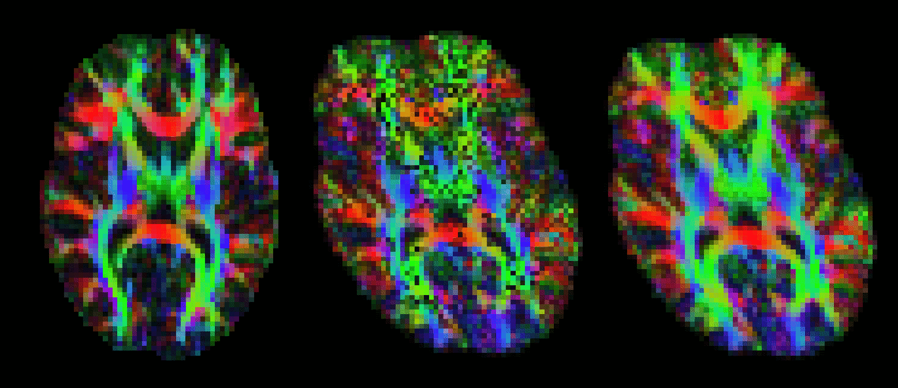 After running dtifit or bedpostx, it is often useful to register vector data to another space. For example, one might want to represent V1 for different subjects in standard space. vecreg is a command line tool that allows to perform such registration.
Vector images cannot be registered by simply applying a transformation (as calculated by, say, FLIRT) to every voxel's coordinates. The corresponding vectors have to be reoriented accordingly (see D. Alexander 2001, IEEE-TMI 20:1131-39). vecreg performs this operation for you. The image on the right shows the effect of applying vecreg (right) to the V1 image on the left, compared to simply applying voxelwise transformation (e.g. using applyxfm4D) to the vectors (centre).
Important: vecreg does not calculate a transformation, but simply applies a given transformation to the input vector field. vecreg can apply a linear transformation calculated with FLIRT, or a non-linear transformation calculated by FNIRT.
types of input that may be used for vecreg from DTIFIT: V1,V2,V3,tensor from BEDPOSTX: dyads1, dyads2, etc.
Command line options
vecreg -i <input4D> -o <output4D> -r <refvol> [-t <transform>]
Compulsory arguments (You MUST set one or more of):
-i,--input filename for input vector or tensor field
-o,--output filename for output registered vector or tensor field
-r,--ref filename for reference (target) volume
Optional arguments (You may optionally specify one or more of):
-v,--verbose switch on diagnostic messages
-h,--help display this message
-t,--affine filename for affine transformation matrix
-w,--warpfield filename for 4D warp field for nonlinear registration
--rotmat filename for secondary affine matrix
if set, this will be used for the rotation of the vector/tensor field
--rotwarp filename for secondary warp field
if set, this will be used for the rotation of the vector/tensor field
--interp interpolation method : nearestneighbour, trilinear (default), sinc or spline
-m,--mask brain mask in input space
--refmask brain mask in output space (useful for speed up of nonlinear reg)
qboot - Estimation of fibre orientations using q-ball ODFs and residual bootstrap
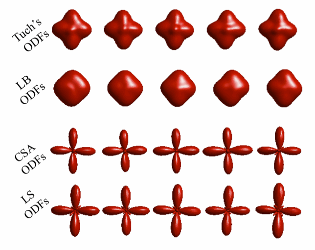
qboot is a command line tool that allows estimation of diffusion ODFs and fibre orientations from them. Its output can be used as an input for probtrackX in order to perform probabilistic tractography.
ODF estimation is performed using a real spherical harmonics basis. Fibre orientations are estimated as the local maxima of the ODFs. Both deterministic and probabilistic estimation can be performed. For the latter, residual bootstrap is performed to infer on the ODF shape and obtain a distribution of fibre orientations. For more details on the implementation see Sotiropoulos2011 (S.N. Sotiropoulos, I. Aganj, S. Jbabdi, G. Sapiro, C. Lenglet and T.E. Behrens, "Inference on Constant Solid Angle Orientation Distribution Functions from Diffusion-Weighted MRI", p.609, Quebec, Canada, OHBM, 2011).
qboot allows reconstruction of q-ball ODFs (Tuch DS, MRM 2004), CSA ODFs (Aganj I et al, MRM, 2010) and variants of them, obtained via Laplacian sharpening and Laplace-Beltrami regularization (Descoteaux et al, MRM, 2007). Both spherical harmonic coefficients of the reconstructed ODFs and fibre orientation estimates may be returned as output. A real spherical harmonic basis is employed (Aganj I et al, MRM, 2010).
Input files for qboot : Similar to dtifit and bedpostx, qboot needs a 4D data file, a binary mask_file, a bvecs and a bvals file.
Command-line options
qboot -k data_file -m nodif_brain_mask -r bvecs -b bvals
Compulsory arguments (You MUST set one or more of):
-k,--data Data file
-m,--mask Mask file
-r,--bvecs b vectors file
-b,--bvals b values file
Optional arguments (You may optionally specify one or more of):
--ld,--logdir Output directory (default is logdir)
--forcedir Use the actual directory name given - i.e. don't add + to make a new directory
--q File provided with multi-shell data. Indicates the number of directions for each shell
--model Which model to use. 1=Tuch's ODFs, 2=CSA ODFs (default), 3=multi-shell CSA ODFs
--lmax Maximum spherical harmonic order employed (must be even, default=4)
--npeaks Maximum number of ODF peaks to be detected (default 2)
--thr Minimum threshold for a local maxima to be considered an ODF peak.
Expressed as a fraction of the maximum ODF value (default 0.4)
--ns,--nsamples Number of bootstrap samples (default is 50)
--lambda Laplace-Beltrami regularization parameter (default is 0)
--delta Signal attenuation regularization parameter for model=2 (default is 0.01)
--alpha Laplacian sharpening parameter for model=1 (default is 0, should be smaller than 1)
--seed Seed for pseudo-random number generator
--gfa Compute a generalised FA, using the mean ODF in each voxel
--savecoeff Save the ODF coefficients instead of the peaks.
--savemeancoeff Save the mean ODF coefficients across all samples
-V,--verbose Switch on diagnostic messagesPossible Outputs of qboot
qboot will by default return distributions of ODF peaks. Peaks are detected as local ODF maxima using a finite-difference scheme. Setting --ns=1 , will perform deterministic estimation of the ODFs and their peaks.
If --savecoeff is set, then only samples of the ODF coefficients will be saved, without any peaks.
If --savecoeff --savemeancoeff are set, then only the mean ODF coefficients (across the samples) will be saved for each voxel and again no peaks.
If --savemeancoeff is set, then the mean ODF coefficients (across the samples) will be saved for each voxel, along with the samples of the ODF peaks.
- If none of the above is set, samples of the ODF peaks are saved.
Running qboot on a cluster
Similar to bedpostX qboot can be parallelised if run on an SGE-capable system. The qboot_parallel script can be employed for this purpose.
Multi-shell data assumptions
The current implementation of qboot can estimate multi-shell ODFs, assuming the following for the data:
- Three-shell data are assumed. The bvalues should form an arithmetic progression, e.g. 0, 1000, 2000, 3000 or 0, 2000, 4000, 6000.
It is assumed that all data from each shell are grouped together and shells are one after the other in data, bvecs and bvals. So, if for example 3 directions are available for 3 shells these should appear as: dir1_shell1, dir2_shell1, dir3_shell1, dir1_shell2,dir2_shell2, dir3_shell2, dir1_shell3,dir2_shell3, dir3_shell3.
There is no assumption on the number of directions in each shell. Each shell can have its own directions and number of directions. The minimum number of directions in a shell is dictated by the number of coefficients estimated, i.e. if lmax=4 => Num_of_coeff=15 => All shells should have at least 15 directions. This is because interpolation of the data occurs, when: i) different number of directions exist in different shells or ii) same number of directions, but corresponding directions between shells (e.g. dir1_shell1 vs dir1_shell2) differ more than 1 degree. In this case each shell is fitted with SH of the same order, which is by default 10, unless the number of directions in the shell with the less points is not enough (then order is decreased).
- By default, same number of datapoints (including b=0's) are assumed for each shell acquisition. If this is not the case, a --q=qshells.txt file should be provided. The information in the qshells file is of the form N1 N2 N3 , each number indicating the number of datapoints (including b=0's) that correspond to each shell acquisition.
Fslview
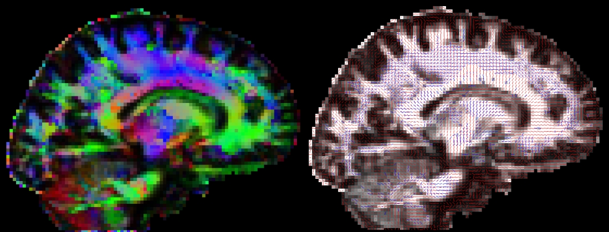
Displaying DWI images in fslview
Outputs of bedpostx or dtifit can be conveniently displayed in fslview. If you open an image of diffusion vectors (e.g., dtifit_V1 output of dtifit or dyads<i> output of bedpostx) then it is possible to display these vectors using RGB coding (where the colours red,green and blue represent diffusion in the x,y,z axes respectively) or using lines where a line at each voxel represents the principle diffusion direction at that voxel.
It is also possible to display multiple lines per voxel. Each line will be displayed in a different colour. In the example above, the red lines represent the main fibre orientation, and the blue lines represent the secondary fibre orientations (thresholded at an f-value of 0.05), as calculated by bedpostx.
If you only want to visualise fibres within voxels where multiple fibres are supported (e.g. above a certain threshold for the corresponding mean_f<i>samples), then you first have to create a vector file where the voxels below a certain f-threshold are zeroed. You may use the two following command for that:
maskdyads dyads<i> mean_f<i>samples 0.05
For more details see the relevant fslview tutorial.